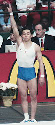

Yutaka Aihara (JPN)
1991 World V Bronze Medalist

Medal Total
Olympic Games: 1
Bronze
World Championships: 1 Bronze
Yutaka was born on December 18, 1970, in Takasaki City, Gunma. His father is Nobuyuki Aihara, the 1960 Olympic floor exercise champion.
Competition Results
1987
Intl. Junior Championships: 2nd V, 3rd FX
1988
Jr. Pacific Alliance Championships: 2nd AA
1989
DTB Cup: 17th AA, 3rd FX
Gander Memorial: 2nd AA
JPN Championships: 2nd AA, 1st V
World Sports Fair: 10th AA, 2nd V
1990
American Cup: 5th AA
Asian Games: 2nd Team
NHK Cup: 1st AA
1991
JPN Championships: 1st V, 2nd R
NHK Cup: 4th AA
University Games: 7th AA, 2nd FX, 3rd V, 3rd PB, 4th R, 8th PH
World Championships: 4th Team, 3rd V
World Sports Fair: 7th AA, 2nd HB, 3rd V, 3rd R, 6th PB
World Stars: 7th AA
1992
Chunichi Cup: 1st AA, 1st V, 1st HB, 2nd FX, 3rd R, 3rd PB, 7th PH
JPN Championships: 1st AA, 2nd R
NHK Cup: 5th AA
Olympic Games: 3rd Team, 5th FX, 8th V
Tokyo Cup: 1st V, 1st PB
World Championships: 4th FX
This page was created on September
11, 2005 and was last updated on September 16, 2005.
© Gymn Forum